المهلبية بالنشا
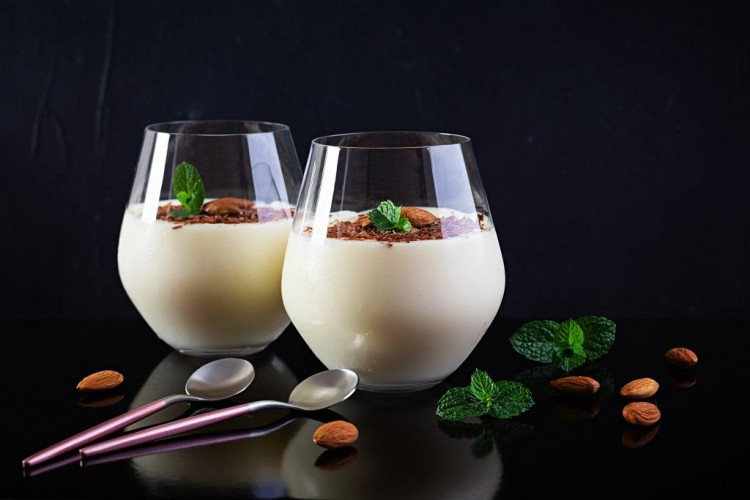
📝 المكونات
- حليب : 4 أكواب
- نشا : 4 ملاعق كبيرة
- سكر : نصف كوب
- فانيليا : 1 ملعقة صغيرة
- مكسرات أو جوز هند للتزيين
👩🍳 طريقة التحضير
- ذوبي النشا في كوب حليب بارد.
- في حلة، ضعي باقي الحليب مع السكر على النار.
- عند السخونة أضيفي خليط النشا مع التقليب المستمر.
- استمري في التقليب حتى يثقل القوام.
- أضيفي الفانيليا وارفعيها من النار.
- اسكبي المهلبية في أطباق التقديم.
- زيّني بالمكسرات وقدّميها باردة.
الكريم كراميل البيتي
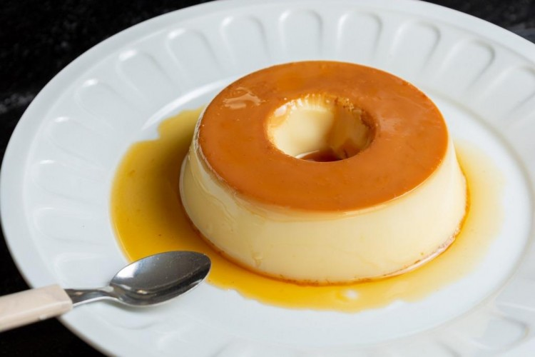
📝 المكونات
الكراميل:
- سكر : 1 كوب
- ماء : 2 ملعقة كبيرة
خليط الكريم:
- حليب : 3 أكواب
- بيض : 4 بيضات
- سكر : نصف كوب
- فانيليا : 1 ملعقة صغيرة
👩🍳 طريقة التحضير
-
في طاسة على نار متوسطة، ضعي السكر مع الماء واتركيه بدون تقليب حتى
يتحول للون الذهبي.
- اسكبي الكراميل في قاع القوالب ووزعيه جيدًا.
- اخفقي البيض مع السكر والفانيليا خفقًا خفيفًا.
-
سخني الحليب حتى يصبح دافئًا، ثم أضيفيه تدريجيًا على البيض مع التقليب
المستمر.
- اسكبي الخليط فوق الكراميل في القوالب.
- ضعي القوالب في صينية فرن بها ماء ساخن.
- اخبزي في فرن مسخن على 170 درجة مئوية لمدة 45 دقيقة.
- اتركيها تبرد ثم ضعيها في الثلاجة ساعتين على الأقل.
- اقليبي القوالب في أطباق التقديم وقدميها باردة.
بسبوسة القشطة
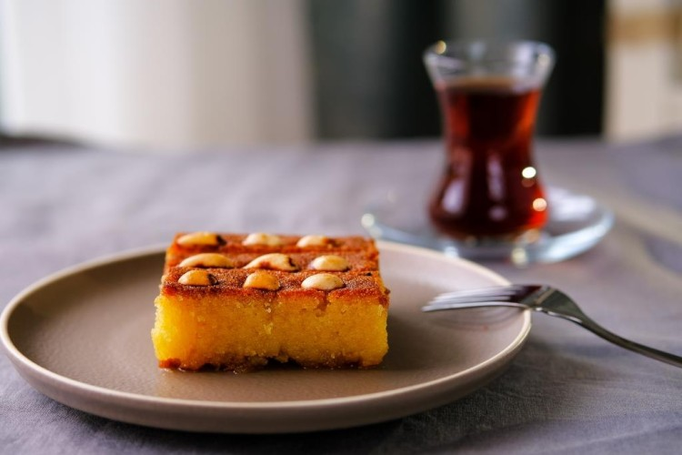
📝 المكونات
- سميد : 2 كوب
- سكر : 1 كوب
- حليب : 1 كوب
- زبدة مذابة : نصف كوب
- قشطة : 1 كوب
- بيكنج باودر : 1 ملعقة صغيرة
- لوز للتزيين
👩🍳 طريقة التحضير
- اخلطي السميد مع السكر والبيكنج باودر والزبدة المذابة.
- أضيفي الحليب تدريجيًا مع التقليب حتى تتكون عجينة متماسكة.
- ضعي نصف العجينة في صينية مدهونة بالزبدة.
- وزعي القشطة على الوجه ثم غطيها بباقي العجينة.
- قطّعي الوجه إلى مربعات وزيّني باللوز.
-
اخبزي في فرن مسخن على 180 درجة لمدة 30–35 دقيقة حتى يصبح الوجه ذهبي.
- اتركيها تبرد ثم قدّميها.
الجلاش باللوز
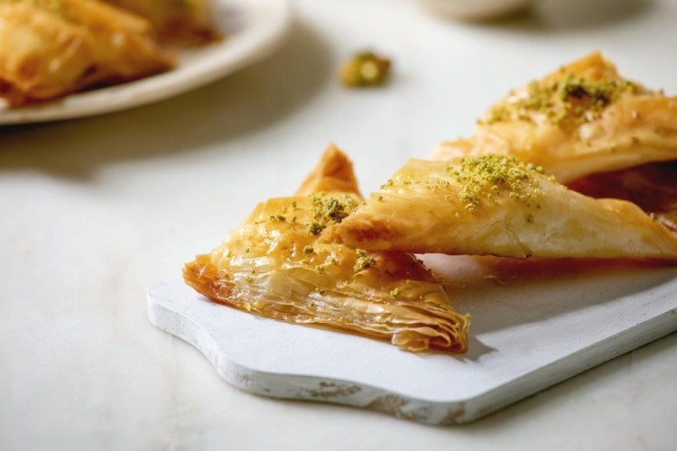
📝 المكونات
- رقائق الجلاش : 8–10 ورقات
- لوز مطحون : 1 كوب
- سكر : نصف كوب
- زبدة مذابة : نصف كوب
- عسل : 3 ملاعق كبيرة للتزيين
👩🍳 طريقة التحضير
- ادهن صينية بالزبدة.
- ضعي ورقة جلاش وادهنها بالزبدة، كرري العملية حتى نصف الورقات.
- وزعي خليط اللوز والسكر على الوجه.
- غطي الخليط بباقي ورقات الجلاش وادهن كل ورقة بالزبدة.
- قطعي الجلاش إلى مربعات.
-
اخبزي في فرن مسخن على 180 درجة لمدة 25–30 دقيقة حتى يتحمر الوجه.
- بعد الخبز، اسكبي العسل على الوجه واتركيه يبرد.
الكنافة بالقشطة
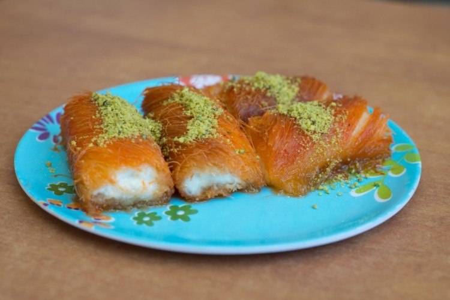
📝 المكونات
- كنافة : 500 غرام
- سمنة أو زبدة : 100 غرام
- قشطة : 1 كوب
- سكر : نصف كوب
- فستق مطحون للتزيين
- شيرة (قطر) : 1 كوب
👩🍳 طريقة التحضير
- افرمي الكنافة وامزجيها مع السمنة المذابة.
- ضع نصف كمية الكنافة في صينية مدهونة بالسمنة واضغطيها قليلاً.
- وزعي القشطة فوقها ثم غطيها بالنصف الآخر من الكنافة.
-
اخبزي في فرن ساخن على 180 درجة لمدة 25–30 دقيقة حتى يصبح الوجه ذهبي.
- اسكبي الشيرة على الكنافة فور خروجها من الفرن.
- زيّني بالفستق المطحون وقدّميها دافئة.
المعمول بالتمر
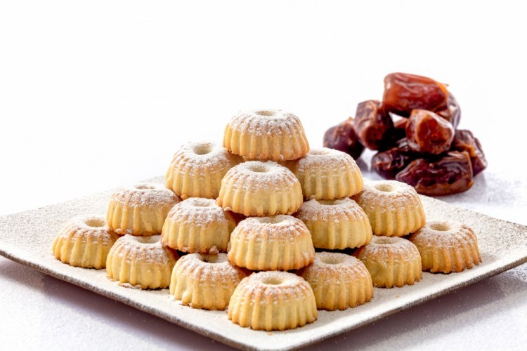
📝 المكونات
- طحين : 3 أكواب
- سمن : 1 كوب
- تمر : 1 كوب
- سكر : 2 ملعقة كبيرة
- ماء ورد : 1 ملعقة صغيرة
- ملح : رشة صغيرة
👩🍳 طريقة التحضير
- اخلطي الطحين مع السمن جيدًا حتى يتجانس الخليط.
- اعجني قليلًا وأضيفي الماء تدريجيًا حتى تصبح العجينة متماسكة.
- احشي العجينة بالتمر واصنعي كرات صغيرة.
- ضعي المعمول في قوالب خاصة واضغطيه برفق.
- اخبزيه في فرن مسخن على 180 درجة لمدة 20 دقيقة.
- اتركيه يبرد قبل التقديم.
القطايف بالمكسرات
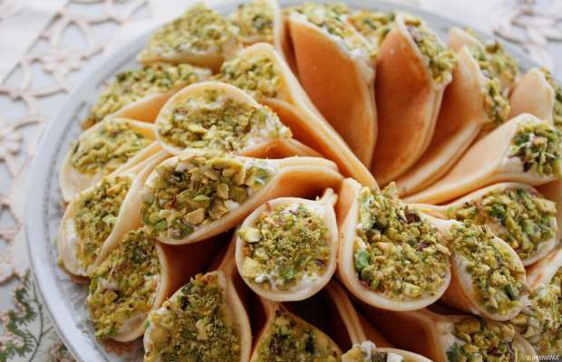
📝 المكونات
- قطايف جاهزة : 10 حبات
- مكسرات (فستق ولوز) : 1 كوب
- سكر : 2 ملعقة كبيرة
- قرفة : نصف ملعقة صغيرة
- زبدة : 2 ملعقة كبيرة
- شيرة (قطر) : 1 كوب
👩🍳 طريقة التحضير
- اخلطي المكسرات مع السكر والقرفة.
- احشي كل قطايف بالمكسرات واغلقيها جيدًا.
- سخني الزبدة في مقلاة واقلي القطايف حتى يصبح الوجه ذهبي.
- اسكبي القطر على القطايف الساخنة وقدّميها مباشرة.
الباف باستري بالمكسرات
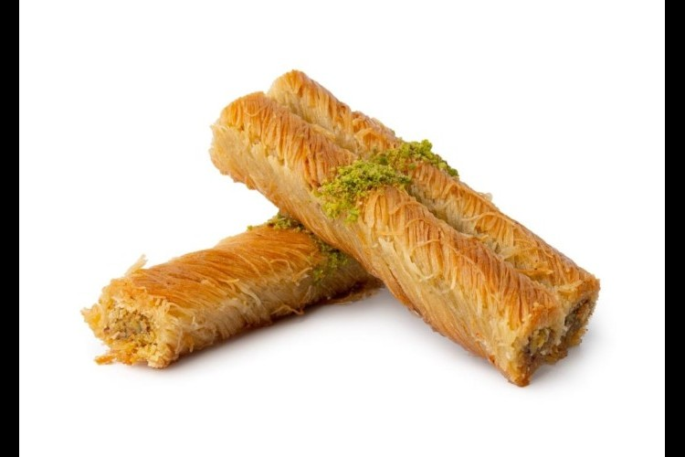
📝 المكونات
- عجينة بف باستري : 4 رقائق
- بيض : 4 حبات
- حليب : 4 أكواب
- حليب مكثف محلى : 2 علبة
- دقيق اللوز : 2 ملعقة كبيرة
- جوز الهند : 2 ملعقة كبيرة
- مكسرات للتزيين
👩🍳 طريقة التحضير
- اخبزي عجينة البف باستري حسب التعليمات حتى تتحمر.
-
حضري الكاسترد: سخني الحليب مع الحليب المكثف ثم أضيفي البيض مع التقليب
المستمر حتى يثقل الخليط.
- أضيفي دقيق اللوز وجوز الهند إلى الكاسترد وامزجي جيدًا.
- اسكبي الكاسترد على البف باستري المبردة.
- زيّني بالمكسرات واخبزي لمدة 10–15 دقيقة إضافية إذا لزم الأمر.
الشوكولاتة بالفواكه المجففة
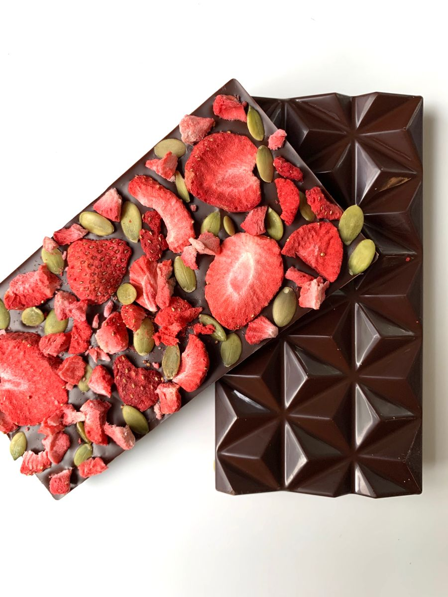
📝 المكونات
- شوكولاتة داكنة : 200 غرام
- فواكه مجففة (مشمش، توت، كرز) : 1 كوب
- مكسرات : نصف كوب
👩🍳 طريقة التحضير
- سخني الشوكولاتة على حمام مائي حتى تذوب.
- أضيفي الفواكه المجففة والمكسرات وامزجي جيدًا.
- اسكبي الخليط في قالب مبطن بورق الزبدة.
- ضعيه في الثلاجة حتى يتماسك ثم قطعيه مربعات وقدّميه.
الموس بالمانجو
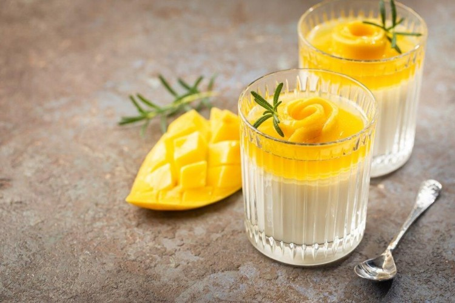
📝 المكونات
- مانجو ناضجة : 2 حبة
- كريمة خفق : 1 كوب
- سكر : 3 ملاعق كبيرة
- جيلاتين : 1 ملعقة صغيرة مذابة في ماء
👩🍳 طريقة التحضير
- اهرسي المانجو في الخلاط حتى تصبح عصير ناعم.
- اخفقي كريمة الخفق مع السكر حتى تتكون قمة خفيفة.
- أضيفي عصير المانجو إلى الكريمة مع الجيلاتين المذاب وامزجي برفق.
- اسكبي الخليط في كاسات التقديم وضعيه في الثلاجة لمدة ساعتين.
- زيّني بالكريمة أو قطع مانجو قبل التقديم.
التشيز كيك بالكيك المحمص
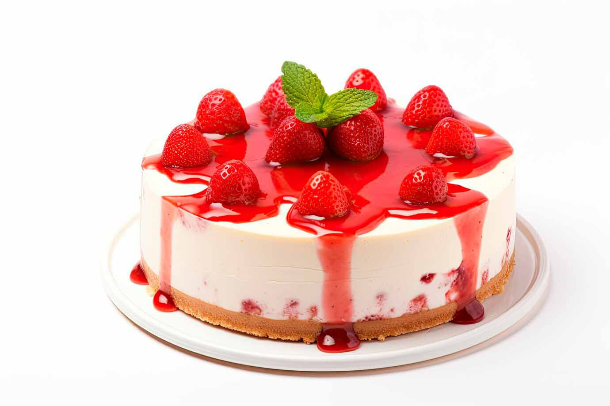
📝 المكونات
- بسكويت مطحون : 2 كوب
- زبدة مذابة : نصف كوب
- جبنة كريمية : 500 غرام
- سكر : نصف كوب
- كريمة : نصف كوب
- فانيليا : 1 ملعقة صغيرة
- كيك جاهز مفتت للتزيين
👩🍳 طريقة التحضير
- اخلطي البسكويت مع الزبدة وادهني قاعدة قالب التشيز كيك.
- اخفقي الجبنة مع السكر والفانيليا حتى تصبح ناعمة.
- أضيفي الكريمة وامزجي جيدًا.
- اسكبي الخليط فوق القاعدة البسكويتية.
- زيّني بالكيك المفتت.
- ضعيه في الثلاجة لعدة ساعات قبل التقديم.
بودينغ الشوكولاتة
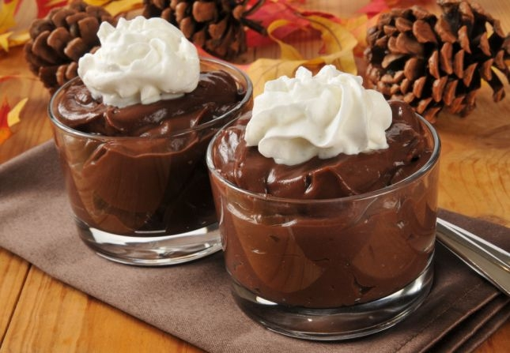
📝 المكونات
- حليب : 3 أكواب
- سكر : نصف كوب
- كاكاو : 3 ملاعق كبيرة
- نشا : 3 ملاعق كبيرة
- فانيليا : 1 ملعقة صغيرة
- شوكولاتة مبشورة للتزيين
👩🍳 طريقة التحضير
- اخلطي السكر والكاكاو والنشا مع قليل من الحليب البارد.
-
سخني باقي الحليب حتى يغلي، ثم أضيفي خليط الكاكاو مع التقليب المستمر.
- استمري في التقليب حتى يثقل البودينغ.
- ارفعيه من النار وأضيفي الفانيليا.
-
اسكبي البودينغ في كاسات وقدّميه باردًا مزينًا بالشوكولاتة المبشورة.
البسكويت المحشي بالمربى
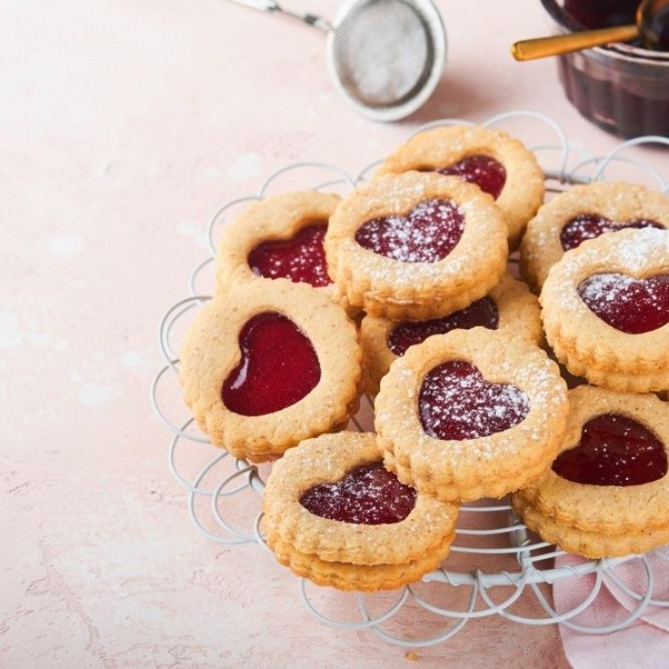
📝 المكونات
- طحين : 2 كوب
- زبدة : نصف كوب
- سكر : 1/2 كوب
- بيض : 1 حبة
- مربى حسب الرغبة : 1/2 كوب
- فانيليا : 1 ملعقة صغيرة
👩🍳 طريقة التحضير
- اخفقي الزبدة مع السكر والبيض والفانيليا.
- أضيفي الطحين تدريجيًا واعجني حتى تصبح عجينة متماسكة.
- قسمي العجينة إلى كرات صغيرة وافتحي كل كرة باليد أو النشابة.
- احشي كل قطعة بالمربى واغلقيها جيدًا.
-
ضع البسكويت على صينية مدهونة واخبزي في فرن مسخن على 180 درجة لمدة
15–20 دقيقة.
- اتركيه يبرد قبل التقديم.
الكيك الاسفنجي بالشيكولاتة
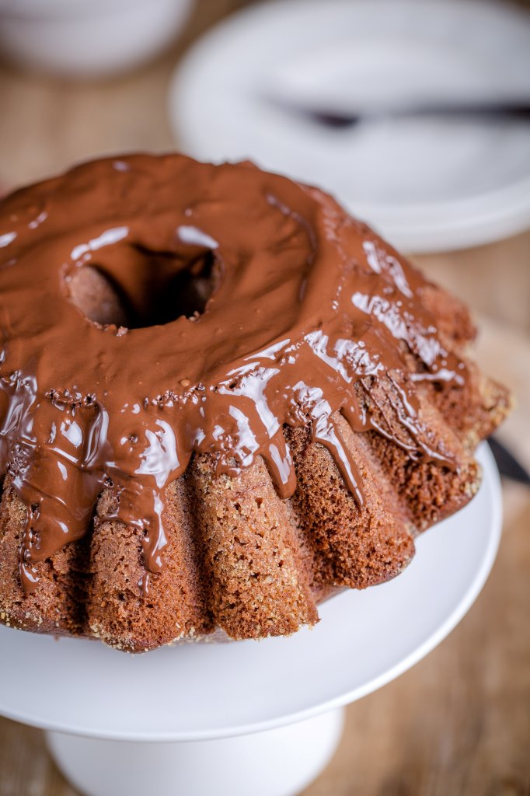
📝 المكونات
- بيض : 4 حبات
- سكر : 1 كوب
- طحين : 1 كوب
- كاكاو : 1/4 كوب
- فانيليا : 1 ملعقة صغيرة
- بيكنج باودر : 1 ملعقة صغيرة
- زيت : 1/4 كوب
👩🍳 طريقة التحضير
- اخفقي البيض مع السكر والفانيليا حتى يصبح المزيج كريمي وهش.
-
نخلط الطحين مع الكاكاو والبيكنج باودر ثم نضيفهم تدريجيًا إلى خليط
البيض برفق.
- أضيفي الزيت وامزجي بلطف.
-
صب الخليط في قالب مدهون واخبزي في فرن مسخن على 180 درجة لمدة 25–30
دقيقة.
- اتركي الكيك يبرد قبل التقطيع والتقديم.
تارت الفواكه
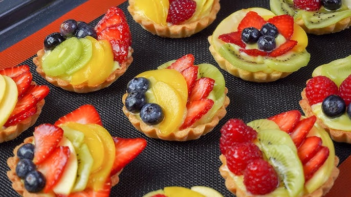
📝 المكونات
- عجينة تارت جاهزة : 1 عبوة
- كريم باتسيير : 1 كوب
- فواكه طازجة متنوعة : 2 كوب
- هلام للفواكه (اختياري) : 2 ملعقة كبيرة
👩🍳 طريقة التحضير
- اخبزي العجينة حسب التعليمات على حرارة 180 درجة حتى تصبح ذهبية.
- املئي العجينة بالكريم باتسيير وافرديه بالتساوي.
- رتبي الفواكه الطازجة على الوجه بطريقة جميلة.
- اختياري: امسحي الفواكه بالهلام ليصبح التارت لامعًا.
- قدمي التارت باردًا.
موس الشوكولاتة الداكنة
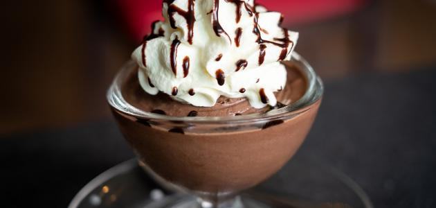
📝 المكونات
- شوكولاتة داكنة : 200 غرام
- بيض : 3 حبات (مفصول الصفار عن البياض)
- سكر : 2 ملعقة كبيرة
- كريمة خفق : نصف كوب
👩🍳 طريقة التحضير
- ذوبي الشوكولاتة على حمام مائي حتى تصبح ناعمة.
- اخفقي صفار البيض مع السكر حتى يصبح كريمي.
- أضيفي الشوكولاتة المذابة إلى الصفار وامزجي جيدًا.
- اخفقي بياض البيض حتى تتكون قمم ناعمة ثم ادمجيه مع الخليط بلطف.
- اخفقي كريمة الخفق وأضيفيها للخليط برفق.
- اسكبي الموس في كاسات وقدميه باردًا.
تارت الشوكولاتة بالكراميل

📝 المكونات
- قاعدة تارت جاهزة : 1 عبوة
- شوكولاتة داكنة : 150 غرام
- كريمة : نصف كوب
- كراميل جاهز : 1/2 كوب
- ملح خشن : رشة صغيرة
👩🍳 طريقة التحضير
- اخبزي قاعدة التارت حسب التعليمات على حرارة 180 درجة.
-
لتحضير ganache: سخني الكريمة واسكبيها على الشوكولاتة المقطعة، ثم اخلطي
حتى تصبح ناعمة.
- صبي الكراميل على القاعدة ثم اسكبي الشوكولاتة فوقه.
- رشّي الملح الخشن على الوجه واتركيه يبرد قبل التقديم.
كعكة الجزر
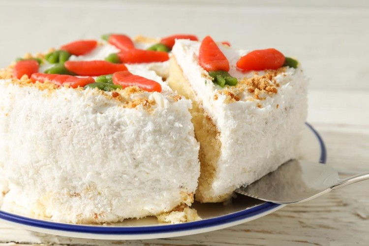
📝 المكونات
- جزر مبشور : 2 كوب
- طحين : 2 كوب
- سكر : 1 كوب
- زيت نباتي : نصف كوب
- بيض : 3 حبات
- بيكنج باودر : 1 ملعقة صغيرة
- قرفة : 1 ملعقة صغيرة
- فانيليا : 1 ملعقة صغيرة
- جوز هند (اختياري) : نصف كوب
👩🍳 طريقة التحضير
- اخفقي البيض مع السكر والفانيليا ثم أضيفي الزيت.
- اخلطي الطحين مع البيكنج باودر والقرفة وجوز الهند.
- أضيفي خليط الطحين إلى البيض مع التقليب ثم أضيفي الجزر المبشور.
-
صبّي الخليط في قالب مدهون واخبزي في فرن مسخن على 180 درجة لمدة 35–40
دقيقة.
- اتركي الكعكة تبرد قبل التقديم.
تارت الليمون
📝 المكونات
- قاعدة تارت جاهزة : 1 عبوة
- عصير ليمون : نصف كوب
- سكر : نصف كوب
- بيض : 3 حبات
- زبدة : 50 غرام
- قشر ليمون مبشور : 1 ملعقة صغيرة
👩🍳 طريقة التحضير
- اخبزي القاعدة حسب التعليمات على حرارة 180 درجة.
- اخلطي عصير الليمون مع السكر والزبدة والبيض وقشر الليمون.
- اسكبي الخليط على القاعدة واخبزي لمدة 20 دقيقة حتى يتماسك.
- اتركيه يبرد ثم قدميه باردًا.
براونيز الشوكولاتة
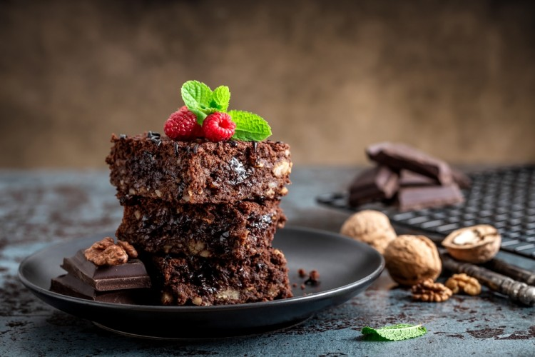
📝 المكونات
- شوكولاتة داكنة : 200 غرام
- زبدة : 100 غرام
- سكر : 1 كوب
- بيض : 3 حبات
- طحين : نصف كوب
- فانيليا : 1 ملعقة صغيرة
- مكسرات (اختياري) : نصف كوب
👩🍳 طريقة التحضير
- ذوبي الشوكولاتة مع الزبدة على نار هادئة.
- اخفقي البيض مع السكر والفانيليا ثم أضيفي الشوكولاتة المذابة.
- أضيفي الطحين والمكسرات وامزجي برفق.
-
صبّي الخليط في قالب مبطن بورق الزبدة واخبزي على حرارة 180 درجة لمدة
25–30 دقيقة.
- اتركيه يبرد قبل التقطيع.
مهلبية الفستق

📝 المكونات
- حليب : 4 أكواب
- نشا : 3 ملاعق كبيرة
- سكر : نصف كوب
- فستق مطحون : 1/4 كوب
- فانيليا : 1 ملعقة صغيرة
👩🍳 طريقة التحضير
- ذوبي النشا في قليل من الحليب البارد.
- سخني باقي الحليب مع السكر على النار.
- أضيفي خليط النشا مع التقليب المستمر حتى يثقل.
- أضيفي الفانيليا والفستق المطحون وامزجي جيدًا.
- اسكبي المهلبية في أطباق وقدميها باردة.
رول الشوكولاتة

📝 المكونات
- بيض : 4 حبات
- سكر : نصف كوب
- طحين : نصف كوب
- كاكاو : 2 ملعقة كبيرة
- فانيليا : 1 ملعقة صغيرة
- كريمة خفق : نصف كوب
- شوكولاتة مبشورة : للتزيين
👩🍳 طريقة التحضير
- اخفقي البيض مع السكر والفانيليا حتى يصبح المزيج كريمي وهش.
- نخلط الطحين مع الكاكاو ونضيفه تدريجيًا إلى خليط البيض.
-
صبّي الخليط على صينية مبطنة بورق الزبدة واخبزي على حرارة 180 درجة لمدة
12–15 دقيقة.
- اقلب الكيك فور الخبز على ورقة أخرى وارفعي الورقة الأصلية بحذر.
- ادهني بالكريمة ولفّي الكيك رول.
- زيّني بالشوكولاتة المبشورة وقدّميه باردًا.
فطائر التفاح
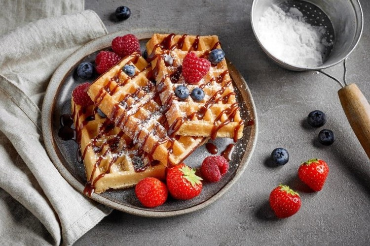
📝 المكونات
- عجينة فطائر جاهزة : 1 عبوة
- تفاح مقطع : 3 حبات
- سكر : نصف كوب
- قرفة : 1 ملعقة صغيرة
- زبدة : 2 ملعقة كبيرة
👩🍳 طريقة التحضير
- اخلطي التفاح مع السكر والقرفة والزبدة.
- اقطعي العجينة إلى مربعات واملئي كل مربع بمزيج التفاح.
- اغلقي الفطائر جيدًا وصبيها على صينية مدهونة.
-
اخبزي في فرن مسخن على 180 درجة لمدة 20–25 دقيقة حتى يصبح الوجه ذهبي.
- قدميها دافئة أو باردة حسب الرغبة.
موس الفراولة
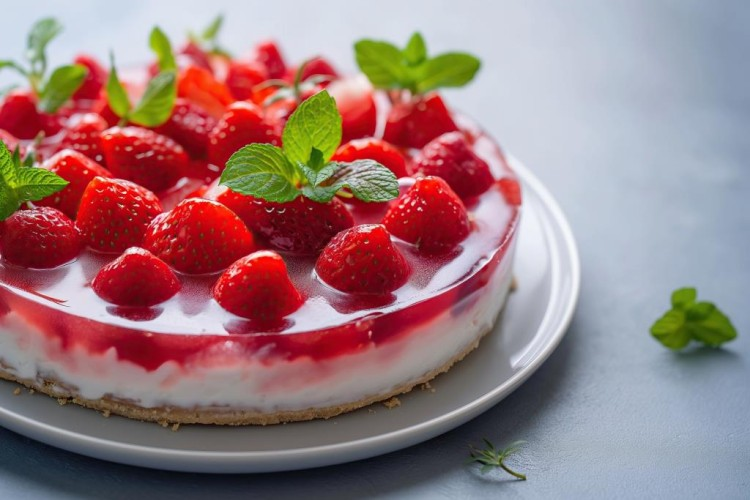
📝 المكونات
- فراولة طازجة : 2 كوب
- سكر : 3 ملاعق كبيرة
- كريمة خفق : 1 كوب
- جيلاتين : 1 ملعقة صغيرة مذابة في ماء
👩🍳 طريقة التحضير
- اهرسي الفراولة مع السكر في الخلاط.
- اخفقي كريمة الخفق ثم أضيفي الفراولة والجيلاتين وامزجي بلطف.
- اسكبي الموس في كاسات التقديم وضعيه في الثلاجة لساعة على الأقل.
- زيّني بالفراولة قبل التقديم.